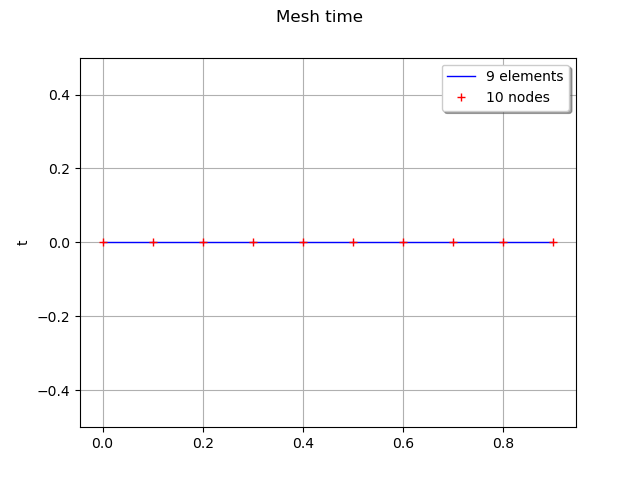

Note
Click here to download the full example code
Creation of a regular grid¶
In this example we will demonstrate how to create a regular grid. Note that a regular grid is a particular mesh of ![\mathcal{D}=[0,T] \in \mathbb{R}](../../_images/math/4b98426bac4949d9956dea99eebd36c085887b27.svg) .
.
Here we will assume it represents the time  as it is often the case, but it can represent any physical quantity.
as it is often the case, but it can represent any physical quantity.
A regular time grid is a regular discretization of the interval ![[0, T] \in \mathbb{R}](../../_images/math/3eee23f65f3a6c0ef4bf19d4b153bb9345bb58a5.svg) into
into  points, noted
points, noted  .
.
The time grid can be defined using  where is the number of points in the time grid.
where is the number of points in the time grid.  the time step between two consecutive instants and
the time step between two consecutive instants and  . Then,
. Then,  and .
and .
Consider  a multivariate stochastic process of dimension
a multivariate stochastic process of dimension  , where
, where  ,
, ![\mathcal{D}=[0,T]](../../_images/math/d4b8ac5329fbacd0712c1e64bca32f52bdc791ef.svg) and
and  is interpreted as a time stamp. Then the mesh associated to the process
is interpreted as a time stamp. Then the mesh associated to the process  is a (regular) time grid.
is a (regular) time grid.
from __future__ import print_function
import openturns as ot
import openturns.viewer as viewer
from matplotlib import pylab as plt
import math as m
ot.Log.Show(ot.Log.NONE)
tMin = 0.
tStep = 0.1
n = 10
# Create the grid
time_grid = ot.RegularGrid(tMin, tStep, n)
Get the first and the last instants, the step and the number of points
start = time_grid.getStart()
step = time_grid.getStep()
grid_size = time_grid.getN()
end = time_grid.getEnd()
print('start=', start, 'step=', step, 'grid_size=', grid_size, 'end=', end)
Out:
start= 0.0 step= 0.1 grid_size= 10 end= 1.0
draw the grid
time_grid.setName('time')
graph = time_grid.draw()
view = viewer.View(graph)
plt.show()

Total running time of the script: ( 0 minutes 0.081 seconds)